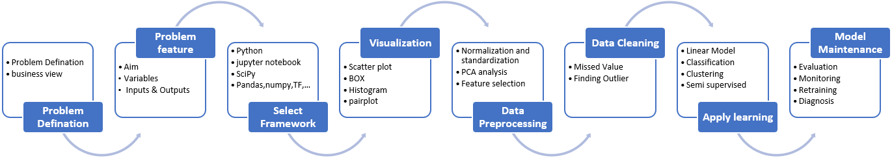

Titanic Demo
- Competition Description
WorkFlow
- Define Problem
- Specify Inputs & Outputs
- Exploratory data analysis
- Data Collection
- Data Preprocessing
- Data Cleaning
- Visualization
- Model Design, Training, and Offline Evaluation
- Model Deployment, Online Evaluation, and Monitoring
- Model Maintenance, Diagnosis, and Retraining
****
图示
****

Python
#
# 0.78
#
#
#
import inline as inline
import matplotlib
import pandas as pd
import seaborn as sns
import numpy as np
import matplotlib.pyplot as plt
#%matplotlib inline
from sklearn.linear_model import LogisticRegression
from sklearn.svm import SVC, LinearSVC
from sklearn.ensemble import RandomForestClassifier
from sklearn.neighbors import KNeighborsClassifier
from sklearn.naive_bayes import GaussianNB
from sklearn.linear_model import Perceptron
from sklearn.linear_model import SGDClassifier
from sklearn.tree import DecisionTreeClassifier
# load csv
train_df = pd.read_csv('/Users/apple/git/kaggle/train.csv')
test_df = pd.read_csv('/Users/apple/git/kaggle/test.csv')
combine = [train_df, test_df]
print('<<3>> 列头&空值数量' + '_'*40)
print(train_df.columns.values)
print(train_df.isnull().sum(axis=0))
# preview the data
print('<<4>>' + '_'*40)
print(train_df.head())
print(train_df.tail())
print('<<6>>' + '_'*40)
train_df.info()
print('_'*40)
test_df.info()
print('<<7>>' + '_'*40)
print(train_df.describe())
print('<<8>>' + '_'*40)
train_df.describe(include=['O'])
print('<<9>>' + '_'*40)
print(train_df[['Pclass', 'Survived']].groupby(['Pclass'], as_index=False).mean().sort_values(by='Survived', ascending=False))
print('<<10>>' + '_'*40)
print(train_df[["Sex", "Survived"]].groupby(['Sex'], as_index=False).mean().sort_values(by='Survived', ascending=False))
print('<<11>>' + '_'*40)
print(train_df[["SibSp", "Survived"]].groupby(['SibSp'], as_index=False).mean().sort_values(by='Survived', ascending=False))
print('<<12>>' + '_'*40)
print(train_df[["Parch", "Survived"]].groupby(['Parch'], as_index=False).mean().sort_values(by='Survived', ascending=False))
print('<<13>>' + '_'*40)
g = sns.FacetGrid(train_df, col='Survived')
g.map(plt.hist, 'Age', bins=20)
# grid = sns.FacetGrid(train_df, col='Pclass', hue='Survived')
grid = sns.FacetGrid(train_df, col='Survived', row='Pclass', size=2.2, aspect=1.6)
grid.map(plt.hist, 'Age', alpha=.5, bins=20)
grid.add_legend();
print('<<14>>' + '_'*40)
print(grid)
grid = sns.FacetGrid(train_df, row='Embarked', size=2.2, aspect=1.6)
grid.map(sns.pointplot, 'Pclass', 'Survived', 'Sex', palette='deep')
grid.add_legend()
print('<<15>>' + '_'*40)
print(grid)
grid = sns.FacetGrid(train_df, row='Embarked', col='Survived', size=2.2, aspect=1.6)
grid.map(sns.barplot, 'Sex', 'Fare', alpha=.5, ci=None)
grid.add_legend()
print('<<16>>' + '_'*40)
print(grid)
print("Before", train_df.shape, test_df.shape, combine[0].shape, combine[1].shape)
train_df = train_df.drop(['Ticket', 'Cabin'], axis=1)
test_df = test_df.drop(['Ticket', 'Cabin'], axis=1)
combine = [train_df, test_df]
"After", train_df.shape, test_df.shape, combine[0].shape, combine[1].shape
print('<<17>>' + '_'*40)
print(train_df)
for dataset in combine:
dataset['Title'] = dataset.Name.str.extract(' ([A-Za-z]+)\.', expand=False)
# dataset['Name1'] = dataset.Name.str.extract('.+,(.+)', expand=False)
# dataset['Name1'] = dataset.Name.str.extract('').str.extract('^(.+?)\.').str.strip()
print('<<18>>' + '_'*40)
print(pd.crosstab(train_df['Title'], train_df['Sex']))
# print('<<18>>1' + '_'*40)
# print(pd.crosstab(train_df['Name1'], train_df['Sex']))
print('<<19>>1' + '_'*40)
for dataset in combine:
# print('<<19>>11' + '_' * 40)
# print(dataset)
# print(dataset['Title'])
# dataset['Title'] = dataset['Title'].replace(['Lady', 'Countess', 'Capt', 'Col', 'Don', 'Dr', 'Major', 'Rev', 'Sir', 'Jonkheer', 'Dona', 'Master'], 'Rare', inplace = True)
# dataset['Title'] = dataset['Title'].replace(["Mlle"], "Miss", inplace = True)
# dataset['Title'] = dataset['Title'].replace(['Ms'], 'Miss', inplace = True)
# dataset['Title'] = dataset['Title'].replace(['Mme'], 'Mrs', inplace = True)
dataset['Title'] = dataset['Title'].replace(['Lady', 'Countess', 'Capt', 'Col', 'Don', 'Dr', 'Major', 'Rev', 'Sir', 'Jonkheer', 'Dona'], 'Rare')
# dataset['Title'] = dataset['Title'].replace(['Capt', 'Col', 'Major', 'Dr', 'Rev'], 'Officer')
# dataset['Title'] = dataset['Title'].replace(['Jonkheer', 'Don', 'Sir', 'the Countess', 'Countess', 'Dona', 'Lady'], 'Royalty')
dataset['Title'] = dataset['Title'].replace(['Mme', 'Mrs'], 'Mrs')
dataset['Title'] = dataset['Title'].replace(['Mlle', 'Miss','Ms'], 'Miss')
dataset['Title'] = dataset['Title'].replace(['Mr'], 'Mr')
dataset['Title'] = dataset['Title'].replace(['Master'], 'Master')
print(dataset['Title'])
print(train_df[['Title', 'Survived']].groupby(['Title'], as_index=False).mean())
print('<<19>>2' + '_'*40)
print(pd.crosstab(train_df['Title'], train_df['Sex']))
print('<<19>>3' + '_'*40)
print(train_df[['Title', 'Survived']].groupby(['Title'], as_index=False).mean())
title_mapping = {"Mr": 1, "Miss": 2, "Mrs": 3, "Master": 4, "Rare": 5}
# title_mapping = {"Mr": 1, "Miss": 2, "Mrs": 3, "Master": 4, "Officer": 5, "Royalty": 6}
for dataset in combine:
dataset['Title'] = dataset['Title'].map(title_mapping)
dataset['Title'] = dataset['Title'].fillna(0)
print('<<20>>' + '_'*40)
print(train_df.head())
train_df = train_df.drop(['Name', 'PassengerId'], axis=1)
test_df = test_df.drop(['Name'], axis=1)
combine = [train_df, test_df]
train_df.shape, test_df.shape
print('<<21>>' + '_'*40)
print(train_df.shape, test_df.shape)
for dataset in combine:
dataset['Sex'] = dataset['Sex'].map( {'female': 1, 'male': 0} ).astype(int)
print('<<22>>' + '_'*40)
print(train_df.head())
grid = sns.FacetGrid(train_df, row='Pclass', col='Sex', size=2.2, aspect=1.6)
grid.map(plt.hist, 'Age', alpha=.5, bins=20)
grid.add_legend()
print('<<23>>' + '_'*40)
print(grid)
guess_ages = np.zeros((2,3))
print('<<24>>' + '_'*40)
print(guess_ages)
print('<<25>>' + '_'*40)
for dataset in combine:
for i in range(0, 2):
for j in range(0, 3):
guess_df = dataset[(dataset['Sex'] == i) & \
(dataset['Pclass'] == j + 1)]['Age'].dropna()
# age_mean = guess_df.mean()
# age_std = guess_df.std()
# age_guess = rnd.uniform(age_mean - age_std, age_mean + age_std)
age_guess = guess_df.median()
# Convert random age float to nearest .5 age
guess_ages[i, j] = int(age_guess / 0.5 + 0.5) * 0.5
for i in range(0, 2):
for j in range(0, 3):
dataset.loc[(dataset.Age.isnull()) & (dataset.Sex == i) & (dataset.Pclass == j + 1), \
'Age'] = guess_ages[i, j]
dataset['Age'] = dataset['Age'].astype(int)
print(train_df.head())
# print('<<26>>' + '_'*40)
# train_df['AgeBand'] = pd.cut(train_df['Age'], 5)
# train_df[['AgeBand', 'Survived']].groupby(['AgeBand'], as_index=False).mean().sort_values(by='AgeBand', ascending=True)
# print(train_df)
for dataset in combine:
dataset.loc[ dataset['Age'] <= 16, 'Age'] = 0
dataset.loc[(dataset['Age'] > 16) & (dataset['Age'] <= 32), 'Age'] = 1
dataset.loc[(dataset['Age'] > 32) & (dataset['Age'] <= 48), 'Age'] = 2
dataset.loc[(dataset['Age'] > 48) & (dataset['Age'] <= 64), 'Age'] = 3
dataset.loc[ dataset['Age'] > 64, 'Age']
print('<<27>>' + '_' * 40)
print(train_df.head())
# train_df = train_df.drop(['AgeBand'], axis=1)
combine = [train_df, test_df]
print('<<28>>' + '_' * 40)
print(train_df.head())
for dataset in combine:
dataset['FamilySize'] = dataset['SibSp'] + dataset['Parch'] + 1
print('<<29>>家庭成员形成比率' + '_' * 40)
print(train_df[['FamilySize', 'Survived']].groupby(['FamilySize'], as_index=False).mean().sort_values(by='Survived', ascending=False))
for dataset in combine:
dataset['IsAlone'] = 0
dataset.loc[dataset['FamilySize'] == 1, 'IsAlone'] = 1
train_df[['IsAlone', 'Survived']].groupby(['IsAlone'], as_index=False).mean()
print('<<30>>' + '_' * 40)
print(train_df.head())
train_df = train_df.drop(['Parch', 'SibSp', 'FamilySize'], axis=1)
test_df = test_df.drop(['Parch', 'SibSp', 'FamilySize'], axis=1)
combine = [train_df, test_df]
print('<<31>>' + '_' * 40)
print(train_df.head())
for dataset in combine:
dataset['Age*Class'] = dataset.Age * dataset.Pclass
print('<<32>>' + '_' * 40)
print(train_df.loc[:, ['Age*Class', 'Age', 'Pclass']].head(10))
freq_port = train_df.Embarked.dropna().mode()[0]
print('<<33>>' + '_' * 40)
print(freq_port)
for dataset in combine:
dataset['Embarked'] = dataset['Embarked'].fillna(freq_port)
print('<<34>>' + '_' * 40)
print(train_df[['Embarked', 'Survived']].groupby(['Embarked'], as_index=False).mean().sort_values(by='Survived', ascending=False))
for dataset in combine:
dataset['Embarked'] = dataset['Embarked'].map( {'S': 0, 'C': 1, 'Q': 2} ).astype(int)
print('<<35>>' + '_' * 40)
print(train_df.head())
test_df['Fare'].fillna(test_df['Fare'].dropna().median(), inplace=True)
print('<<36>>' + '_' * 40)
print(test_df.head())
# train_df['FareBand'] = pd.qcut(train_df['Fare'], 4)
# print('<<37>>' + '_' * 40)
# print(train_df[['FareBand', 'Survived']].groupby(['FareBand'], as_index=False).mean().sort_values(by='FareBand', ascending=True))
for dataset in combine:
dataset.loc[dataset['Fare'] <= 7.91, 'Fare'] = 0
dataset.loc[(dataset['Fare'] > 7.91) & (dataset['Fare'] <= 14.454), 'Fare'] = 1
dataset.loc[(dataset['Fare'] > 14.454) & (dataset['Fare'] <= 31), 'Fare'] = 2
dataset.loc[dataset['Fare'] > 31, 'Fare'] = 3
dataset['Fare'] = dataset['Fare'].astype(int)
# train_df = train_df.drop(['FareBand'], axis=1)
combine = [train_df, test_df]
print('<<38-39>>' + '_' * 40)
print(train_df.head(10))
print(test_df.head(10))
print('<<40>>' + '_' * 40)
X_train = train_df.drop("Survived", axis=1)
Y_train = train_df["Survived"]
X_test = test_df.drop("PassengerId", axis=1).copy()
print(X_train.shape, Y_train.shape, X_test.shape)
logreg = LogisticRegression()
logreg.fit(X_train, Y_train)
Y_pred = logreg.predict(X_test)
acc_log = round(logreg.score(X_train, Y_train) * 100, 2)
print('<<41>>' + '_' * 40)
print(acc_log)
coeff_df = pd.DataFrame(train_df.columns.delete(0))
coeff_df.columns = ['Feature']
coeff_df["Correlation"] = pd.Series(logreg.coef_[0])
print('<<42>>' + '_' * 40)
print(coeff_df.sort_values(by='Correlation', ascending=False))
svc = SVC()
svc.fit(X_train, Y_train)
Y_pred = svc.predict(X_test)
acc_svc = round(svc.score(X_train, Y_train) * 100, 2)
print('<<43>>' + '_' * 40)
print(acc_svc)
knn = KNeighborsClassifier(n_neighbors = 3)
knn.fit(X_train, Y_train)
Y_pred = knn.predict(X_test)
acc_knn = round(knn.score(X_train, Y_train) * 100, 2)
print('<<44>>' + '_' * 40)
print(acc_knn)
gaussian = GaussianNB()
gaussian.fit(X_train, Y_train)
Y_pred = gaussian.predict(X_test)
acc_gaussian = round(gaussian.score(X_train, Y_train) * 100, 2)
print('<<45>>' + '_' * 40)
print(acc_gaussian)
perceptron = Perceptron()
perceptron.fit(X_train, Y_train)
Y_pred = perceptron.predict(X_test)
acc_perceptron = round(perceptron.score(X_train, Y_train) * 100, 2)
print('<<46>>' + '_' * 40)
print(acc_perceptron)
linear_svc = LinearSVC()
linear_svc.fit(X_train, Y_train)
Y_pred = linear_svc.predict(X_test)
acc_linear_svc = round(linear_svc.score(X_train, Y_train) * 100, 2)
print('<<47>>' + '_' * 40)
print(acc_linear_svc)
sgd = SGDClassifier()
sgd.fit(X_train, Y_train)
Y_pred = sgd.predict(X_test)
acc_sgd = round(sgd.score(X_train, Y_train) * 100, 2)
print('<<48>>' + '_' * 40)
print(acc_sgd)
decision_tree = DecisionTreeClassifier()
decision_tree.fit(X_train, Y_train)
Y_pred = decision_tree.predict(X_test)
acc_decision_tree = round(decision_tree.score(X_train, Y_train) * 100, 2)
print('<<49>>' + '_' * 40)
print(acc_decision_tree)
random_forest = RandomForestClassifier(n_estimators=100)
random_forest.fit(X_train, Y_train)
Y_pred = random_forest.predict(X_test)
random_forest.score(X_train, Y_train)
acc_random_forest = round(random_forest.score(X_train, Y_train) * 100, 2)
print('<<50>>' + '_' * 40)
print(acc_random_forest)
models = pd.DataFrame({
'Model': ['Support Vector Machines', 'KNN', 'Logistic Regression',
'Random Forest', 'Naive Bayes', 'Perceptron',
'Stochastic Gradient Decent', 'Linear SVC',
'Decision Tree'],
'Score': [acc_svc, acc_knn, acc_log,
acc_random_forest, acc_gaussian, acc_perceptron,
acc_sgd, acc_linear_svc, acc_decision_tree]})
print('<<51>>' + '_' * 40)
print(models.sort_values(by='Score', ascending=False))
submission = pd.DataFrame({"Survived": Y_pred, "PassengerId": test_df["PassengerId"] })
submission.to_csv('submission.csv', index=False)
________________________________________
Model Score
3 Random Forest 86.76
8 Decision Tree 86.76
1 KNN 84.74
0 Support Vector Machines 83.84
2 Logistic Regression 80.36
7 Linear SVC 79.12
5 Perceptron 78.00
6 Stochastic Gradient Decent 74.07
4 Naive Bayes 72.28
________________________________________